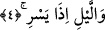
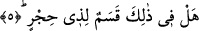

Sehl (r.h.) der ki: “Fecr” Muhammed (a.s.)’dır. Bütün nurlar O’ndan fışkırmıştır. “On
gece” cennetle müjdelenen on sahâbîdir. “Şef’/çift” farz “vitr/tek” ise tâatlerde ihlastır.
4. Geçip gittiği vakit geceye andolsun,
Geceye yeminin geçip gittiği vakitle kayıtlanması, kudretin kemaline ve nimetin
bolluğuna açıkça delâlet etmesinden dolayıdır. Sanki bütün canlılara ölümden sonra
yeniden hayat verilmekte ve böylece iki dünyanın mutluluğunu elde etmeye vesile
olacak dünya hayatını sürdürmelerini sağlayan rızıklarını taleplerine sebep olmaktadır.
Eğer: “Geçip gittiği vakit geceye yemin edilmesi, on geceye yemin edilmesine ihtiyaç
bırakmaz.” Denilirse, biz şöyle cevap veririz: Gecenin geçip gittiği vakte yemin
edilmesi, geçmesi ve gitmesi îtibâriyledir. On geceye yemin edilmesi ise geçip gitmesi
bakımından değil başka bir husûsiyet îtibâriyledir. Dolayısıyla bu iki yeminden birisi
diğerini gereksiz hale getirmez.
Âyetin mânâsının “İçinde yolcunun yürüyüp gittiği zaman geceye yemin olsun”
şeklinde olması da mümkündür. Bu takdirde gece yolculuğunun geceye isnâdı mecazdır.
Tıpkı “gündüzü oruçlu” ifâdesinin kişinin gündüzünü oruç tutarak geçirdiği anlamında
olması gibi. Bu mânâya göre gecenin bu şekilde kayıtlanması gece yürüyüşünün insanı
güneşin sıcağından koruması sebebiyledir. Çünkü gündüzün sıcağının altında yapılan
yolculuk insana daha ağır gelir. Nitekim Hz. Peygamber (s.a.): “Size gece yolculuğunu
tavsiye ederim. Çünkü geceleyin yeryüzü dürülür.”[93] buyurmuştur. Yine gece çoğu
zaman yol kesen eşkıyadan da korur. Çünkü onlar ekseriyetle geceleri uykuyla meşgul
olurlar.
Âyette ruh çıkıp gittiği vakit bedenin zulmette kalmasına işâret vardır. Yine burada
Hakk’ın mutlak hüviyyetinin mukayyed hakîkatler gündüzüne geçip gitmesine yemine
işâret vardır. Nitekim Allah Teâlâ “Allah geceyi gündüze katar,” mutlakın nurlarının
hücumlarıyla mukayyedâtı ortadan kaldırararak “gündüzü geceye katar.” (el-Hac,
22/61) buyurmuştur. Yine âyette Allah’ın kulunu geceleyin yürüttüğü isrâ/mirac
gecesine yemine işâret vardır. Bu gece gecelerin içinde en şereflisi olmuştur. Çünkü
mirac gecesi kadr/değer, şeref, Hakk’a yakınlık/kurb, ulaşma/visâl, hitap ve mutlak
cemâli görme gecesidir.
5. Akıl sâhibi için bunlarda elbette bir yemin (değeri) var, değil mi?